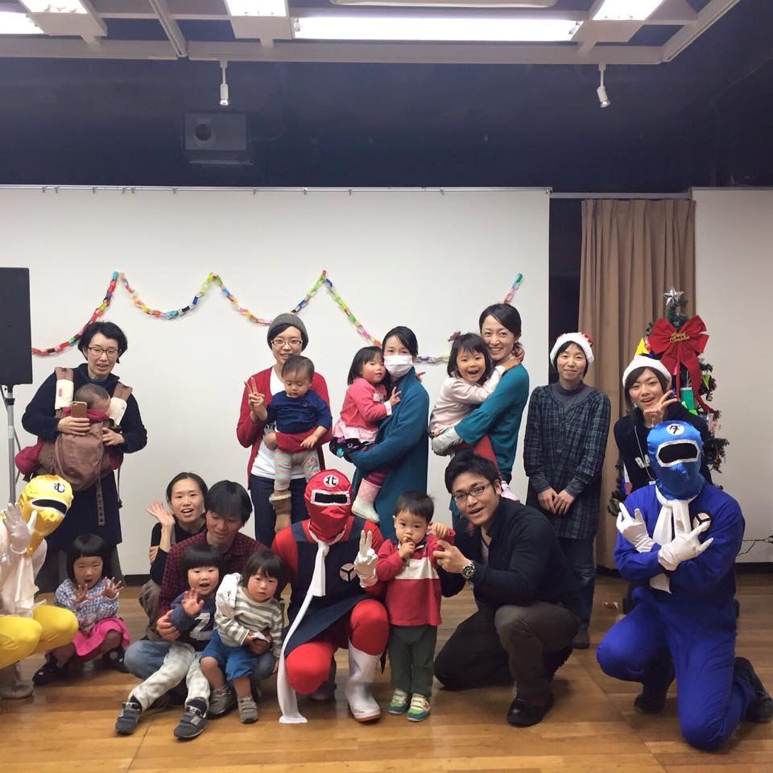

シンボルマークについて

にこにこのシンボルマークは、この女の子。
卵・落花生・乳製品・甲殻類・そば・小麦の順に、
アレルゲンが描かれた風船を持っています。
食物アレルギーがあることで、さびしい思いをすることもあるけれど、
人の温かさや、お互いを思いやる心など、アレルギーだからこそ気づけたことも沢山。
だから、食物アレルギーは、この風船のように、子どもたちを彩る個性なのかもしれません。
それでも、いつか、その風船を手放すことができますように。
食物アレルギーを克服できる日が来ますように。そんな想いが込められています。
活動について
食物アレルギーの子を持つ親同士、情報交換を兼ねながら、
隔月1回程度、おしゃべりしています。
普段周りになかなか理解されづらいことも、ここに来れば、思う存分話せる。
そして共感してもらえる。そんな安心感からか、会話はとても盛り上がります。
時にはイベントを実施することも！
（写真は、アレルギー対応ケーキを用意してのクリスマス会の様子）
活動場所
国立市内の公民館や集会所など。
子供連れでも大丈夫なようにおもちゃを用意し、なるべくアレルゲンとなるような素材を含まない食事やおやつを持参して頂いています。
活動日程
２ヶ月に１回程度。
主におしゃべり会をしています。
「免疫療法」「進学・進級」など、毎回テーマを決めています♪
活動中のメンバー
１歳～小１まで、幅広い年齢のお子さんのいるママが10名程度います。
そのうち、おしゃべり会には、
5～6人のメンバーが集まります。